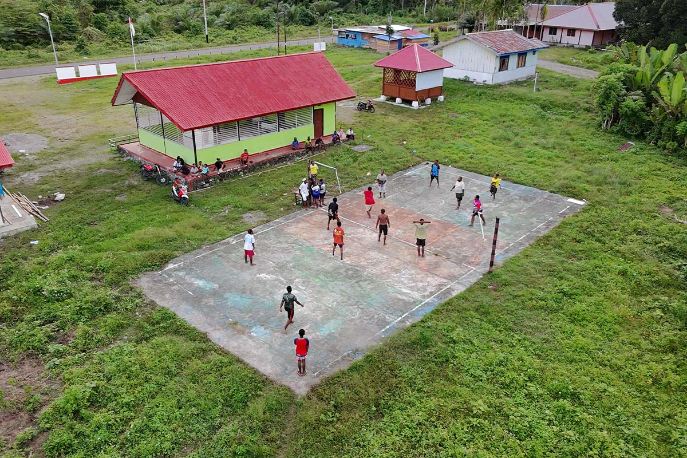
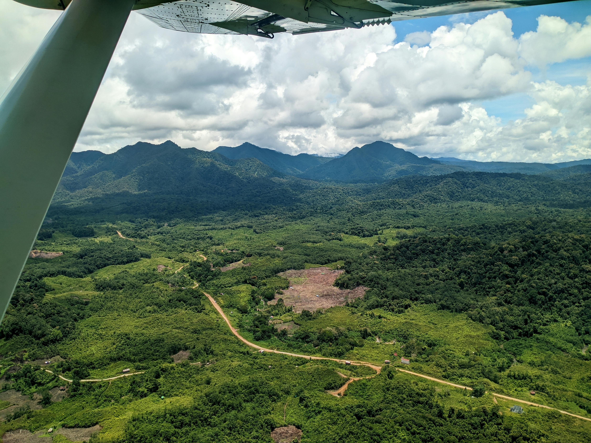

Panduan Foto
Foto Kepala Kampung menggunakan file unggahan Anda:
/files/image_50b209.jpg. Untuk mengganti foto lain, ganti atribut
src pada tag
<img> dengan path file unggahan
Anda (misalnya:
/files/nama_foto_anda.png).
Pemerintahan Kampung
Perangkat dan Pelaksana Teknis Pemerintahan

Kepala Kampung
Bpk. [Nama Kepala]
Sekretaris Kampung
Ibu. [Nama Sekertaris]
Kaur Tata Usaha & Umum
Kaur Keuangan
Kaur Perencanaan
Pelaksana Teknis
Tim Kasi
Kasi Pemerintahan
Kasi Kesejahteraan
Kasi Pelayanan
Pelaksana Kewilayahan
Tim Kadus
Kepala Dusun (Kadus)
Bertanggung jawab atas wilayah
Lembaga Kemasyarakatan Kampung
Mitra Kerja Pemerintah Kampung
Bamus
Badan Musyawarah Kampung
Lembaga Adat
Ondoafi/Kepala Suku
Penjaga Tradisi
RT & RW
Basis Kewilayahan
LPM
Pemberdayaan Masyarakat
PKK
Pembinaan Kesejahteraan Keluarga
Karang Taruna
Organisasi Pemuda

BUMKampung
Badan Usaha Milik Kampung